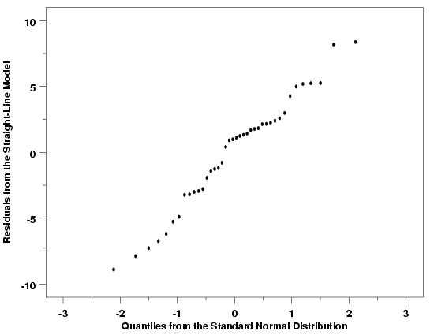
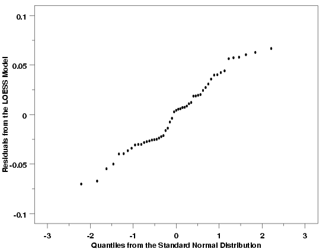
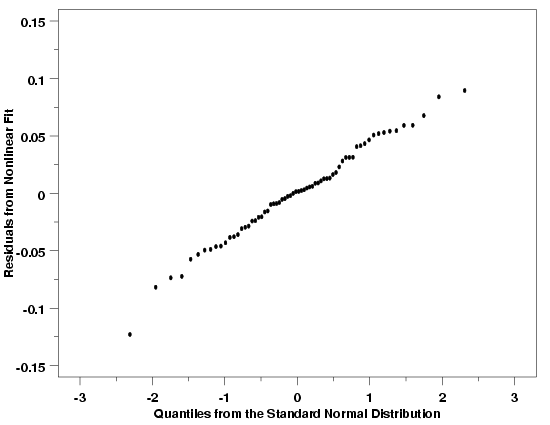
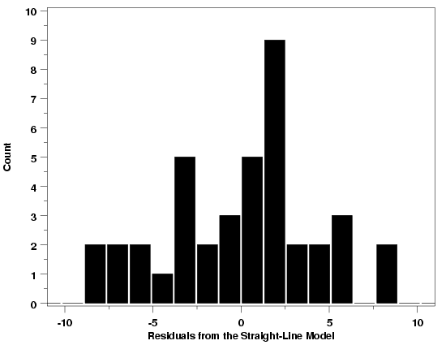
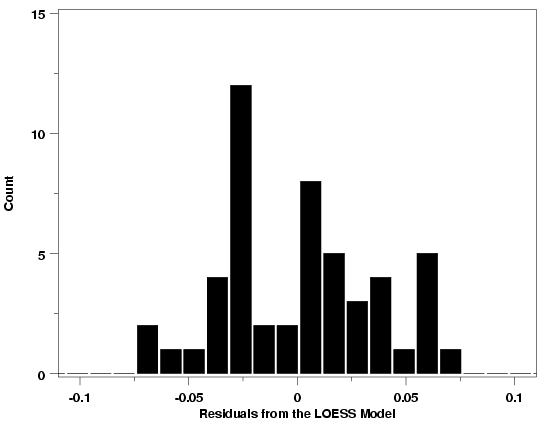
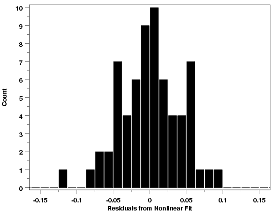

|
4.
Process Modeling
4.4. Data Analysis for Process Modeling 4.4.4. How can I tell if a model fits my data?
|
|||
| Histogram and Normal Probability Plot Used for Normality Checks | The histogram and the normal probability plot are used to check whether or not it is reasonable to assume that the random errors inherent in the process have been drawn from a normal distribution. The normality assumption is needed for the error rates we are willing to accept when making decisions about the process. If the random errors are not from a normal distribution, incorrect decisions will be made more or less frequently than the stated confidence levels for our inferences indicate. | ||
| Normal Probability Plot | The normal probability plot is constructed by plotting the sorted values of the residuals versus the associated theoretical values from the standard normal distribution. Unlike most residual scatter plots, however, a random scatter of points does not indicate that the assumption being checked is met in this case. Instead, if the random errors are normally distributed, the plotted points will lie close to straight line. Distinct curvature or other signficant deviations from a straight line indicate that the random errors are probably not normally distributed. A few points that are far off the line suggest that the data has some outliers in it. | ||
| Examples | Normal probability plots for the Pressure/Temperature example, the Thermocouple Calibration example, and the Polymer Relaxation example are shown below. The normal probability plots for these three examples indicate that that it is reasonable to assume that the random errors for these processes are drawn from approximately normal distributions. In each case there is a strong linear relationship between the residuals and the theoretical values from the standard normal distribution. Of course the plots do show that the relationship is not perfectly deterministic (and it never will be), but the linear relationship is still clear. Since none of the points in these plots deviate much from the linear relationship defined by the residuals, it is also reasonable to conclude that there are no outliers in any of these data sets. | ||
| Normal Probability Plot: Temperature / Pressure Example |  | ||
| Normal Probability Plot: Thermocouple Calibration Example |  | ||
| Normal Probability Plot: Polymer Relaxation Example |  | ||
| Further Discussion and Examples | If the random errors from one of these processes were not normally distributed, then significant curvature may have been visible in the relationship between the residuals and the quantiles from the standard normal distribution, or there would be residuals at the upper and/or lower ends of the line that clearly did not fit the linear relationship followed by the bulk of the data. Examples of some typical cases obtained with non-normal random errors are illustrated in the general discussion of the normal probability plot. | ||
| Histogram | The normal probability plot helps us determine whether or not it is reasonable to assume that the random errors in a statistical process can be assumed to be drawn from a normal distribution. An advantage of the normal probability plot is that the human eye is very sensitive to deviations from a straight line that might indicate that the errors come from a non-normal distribution. However, when the normal probability plot suggests that the normality assumption may not be reasonable, it does not give us a very good idea what the distribution does look like. A histogram of the residuals from the fit, on the other hand, can provide a clearer picture of the shape of the distribution. The fact that the histogram provides more general distributional information than does the normal probability plot suggests that it will be harder to discern deviations from normality than with the more specifically-oriented normal probability plot. | ||
| Examples | Histograms for the three examples used to illustrate the normal probability plot are shown below. The histograms are all more-or-less bell-shaped, confirming the conclusions from the normal probability plots. Additional examples can be found in the gallery of graphical techniques. | ||
| Histogram: Temperature / Pressure Example |  | ||
| Histogram: Thermocouple Calibration Example |  | ||
| Histogram: Polymer Relaxation Example |  | ||
| Important Note |
One important detail to note about the normal probability plot and the
histogram is that they provide information on the distribution of the random
errors from the process only if
|
||

{kind=link}
{kind=link}
{kind=link}
{kind=link}
{kind=link}
{kind=link}